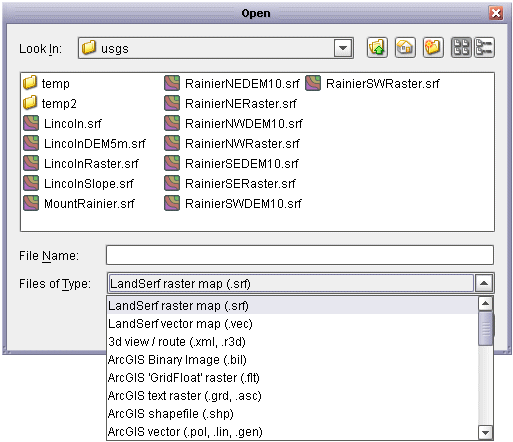
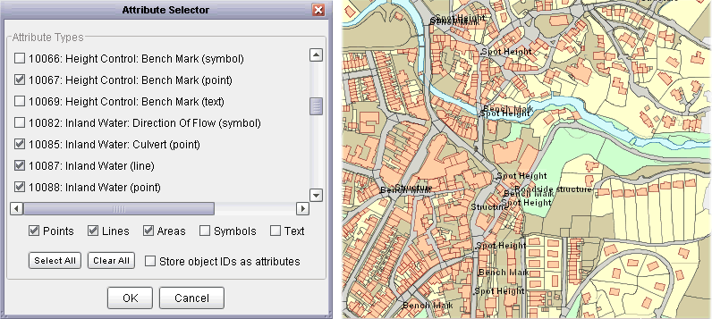
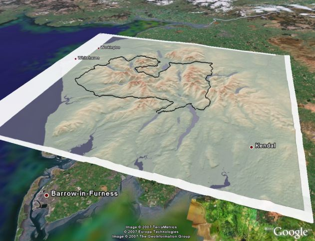
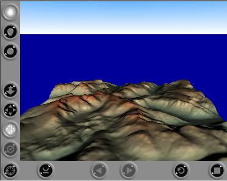
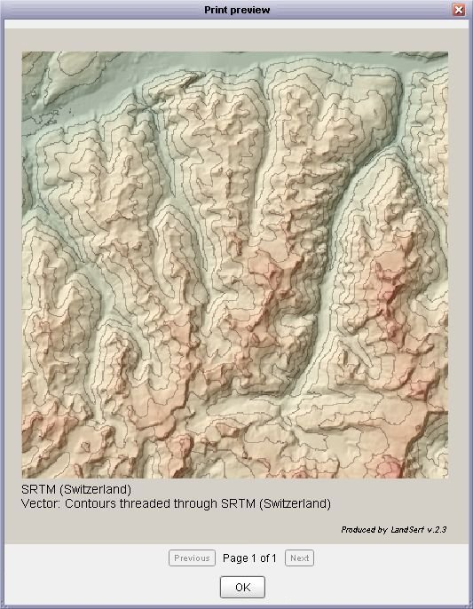
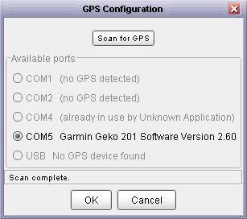
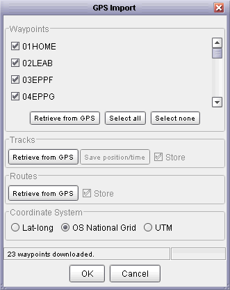
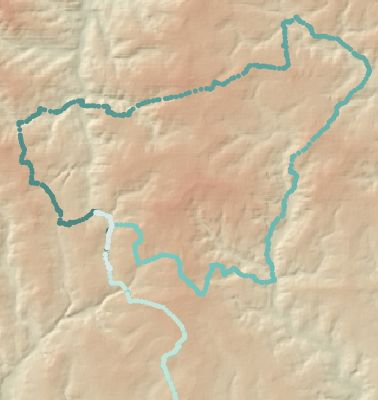
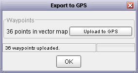
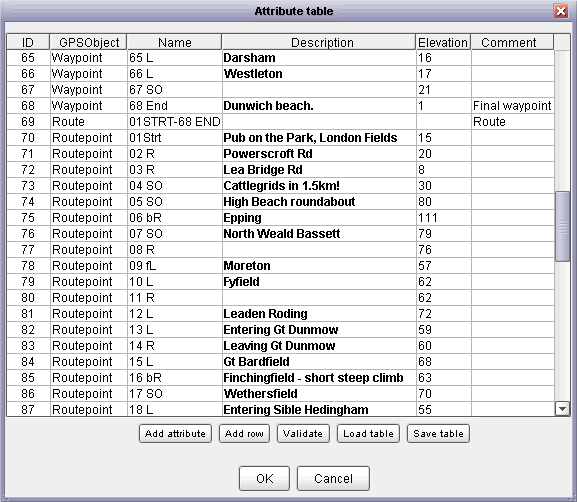

LandSerf uses its own platform independent compressed file format for storing surface models. Opening
and saving of files in this format is achieved via the File->Open and File->Save
menu items or the and
buttons respectively. When saving
a file to disk, it is the primary raster map or primary vector map that is output.
Import and export of files to and from LandSerf can be in a range of formats. See file formats used by LandSerf for more details. You may also wish to view some guidelines on importing elevation models to help with this process.
The file format for both importing and exporting data is selected from the File dialogue in the Files of type:
drop-down menu. When typing the name of a file to save, if a file extension is not provided (e.g. .srf,
.shp etc.), one will be added automatically. Note however that in some cases, the type of file extension
will determine the precise format of the output file (e.g. image files can have the extension .jpg,
.gif or .png; VRML files can will be uncompressed if given the extensions .wrl or
.vrml, but compressed if given the extension .wrz).

File type selection.
Any number of raster or vector maps may be imported into LandSerf, limited only by the memory capacity of the machine running the software. Multiple files of a given type can be imported in a single operation by shift-selecting a range of files in the file chooser. Maps for processing or display can then be selected by clicking on the relevant thumbnail image on the left-hand side of the LandSerf window.
LandSerf can import and export rasters as ArcGIS ASCII or binary (BIL) files. Even if you do not have access to ArcGIS or ArcView, you may find these facilities useful for sharing data. ArcGIS vector files can also be imported and exported as shapefiles and ASCII 'generate' vector coverages and attribute tables.
If you have access to the GIS GRASS, both rasters and vectors may be exported using the GRASS modules
r.out.ascii and v.out.ascii. These files may be read directly into LandSerf
if they have been given a .txt filename extension. Note that to import vector attributes as
well as geometry, you will need the relevant file from GRASS' dig_att file in addition to
the output produced by v.out.ascii.
Ordnance Survey Raster DEMs at both 10m ('Profile data) and 50m ('Panorama' data) resolutions may be read
using the Ordnance Survey NTF raster DEM format. Ordnance Survey vector data (e.g. LandLine,
Strategi, Meridian and MasterMap) can also be imported using either the Ordnance Survey NTF vector
file or Ordnance Survey MasterMap formats. On import of vector data with multiple
attributes, you are presented with the option of importing only a subset of these attributes (see figure
below). For convenience, attributes of given types may also by chosen by selecting from the Points,
Lines, Areas, Symbols and Text list at the bottom of the
window. If importing MasterMap data, you have the option of assigning an individual ID to each object by
selecting Store object IDs as attributes. Note that doing so can produce very large attribute
tables so should only be used if a relatively restricted number of object types are to be imported. Once
imported, data are stored in LandSerf's own attribute table that may be edited later.

Ordnance Survey attribute selection and Mastermap output.
Most elevation data from the US Geological Survey (USGS) are now distributed in one of the ArcGIS raster
formats. However, some are still distributed in 'Native DEM' of DTED format. These data tiled to either 1
degree or 7.5 minutes can be imported directly by selecting either the USGS Native DEM
or DTED raster formats.
Image data such as areal photos, rasterized scanned maps and remotely sensed images can be imported
directly using the image format selector. Formats available for import include GIF, JPEG,
PNG, TIFF and GeoTIFF (LZW compression not yet supported). Georeferencing information may be stored in
a 'world' file sharing the same name as the image, but with a modified extension name as indicated below:
| Image name | World file name |
| photo.tif | photo.tfw |
| map.gif | map.gfw |
| landcover.jpg | landcover.jgw |
| band7.png | band7.pgw |
To import other raster text files, use the Generic text raster format option. Files in this
format consist of text of nrows rows running North to South, with each row consisting of ncols
columns of whitespace separated z-values. These numbers may be integer or real. There should be no header
information associated with the file, although lines starting with a # symbol may be used as
comments and are ignored. Note that to import ASCII data that run row-wise from South to North use the
VistaPro raster format instead. To import text rasters stored column-wise from South to North,
select the EDX format.
The Shuttle Radar Topography Mission provides freely
available elevation data for most of the globe. These are available at a 3 arc-second resolution, which
corresponds to about 90m in an East-West direction at the equator and approaching 50m for northern Europe.
An SRTM 'hgt' file can be imported into LandSerf by selecting the SRTM format from the file dialogue window.
If importing the older 'Version 1' (uncorrected) data, you may wish to remove any voids from the surface
by selecting the Transform->Void removal menu item. After removal, the surface can be reprojected
to a more useful coordinate system by selecting the appropriate option from the Transform->Reproject
menu. For further details, see LandSerf's How to import SRTM data guide.
Other freely available global elevation data including GTOPO30, SRTM30Plus and ETOPO2 bathymetry can also be directly imported into LandSerf by selecting the appropriate file format.
If you wish to share data with software (or data) that use (x,y,z) coordinate triplets to locate elevation
values (e.g. a spreadsheet), you can use the import/export Generic Point File formats. Export
converts the primary raster values into a set of (x,y,z) triplets row-wise from North to South. Import will create
a series of dense vector points that can be converted into a raster using Transform->Vector to raster.
Both raster and vector maps may be exported as KML files for display in GoogleEarth.
Data must be using Latitude/Longitude WGS84 before they can be exported to KML (select Transform->Reproject...
if they are not in this coordinate system). To save a vector map, select KML Vector as the file type in the Save
menu. To save a raster map, select KML Archive (KMZ) which will save the current screen display as a raster
overlay displayable in Google Earth.

KML vector and KMZ raster overlay displayed in GoogleEarth.
While LandSerf contains its own 3d viewer for interactive exploration of surfaces, you may also wish to
export a surface as a VRML world so that it may be viewed by common VRML browsers. Selecting the
VRML world format will export the primary raster surface and create a simple VRML world in
which to display it. The image below shows such a file viewed by the
Cortona VRML browser. Note that
to store the VRML file in compressed format, the file extension .wrz should be used. If you
do not wish to compress the file (some older VRML viewers cannot process compressed files), choose either
.wrl or .vrml as a file extension.

VRML output from LandSerf.
If you have access to the landscape visualisation software
Terragen or VistaPro or the you can import and export rasters directly to and from LandSerf. To export
from VistaPro, choose the finest polygon resolution (1), and select Save ASCII Z from the
Save menu. To export or import files to or from Terragen, rasters are scaled to the nearest 'power of
2 plus 1' (e.g. 257x257, 513x513, 1025x1025) pixels by adding a padding border of zero values where necessary.
LandSerf will also import the binary 'BT' raster format used by the Virtual Terrain Project. Again, even if you do not use any of the VTP software directly, this can be a useful DEM interchange format for exchanging data.
The spatial objects currently displayed in LandSerf's main window can be saved as a GIF, PNG or JPEG graphics
file by selecting the Image format from the save dialogue. The image dimensions will be determined
by the full extent of any raster or vector maps displayed and will be independent of any particular zoomed or
panned view. Note that if a vector map is displayed over a raster, and its extent is significantly wider than
the raster, the resulting image can be quite large, possibly leading to memory problems. To reduce the risk
of such problems, consider subsetting the vector map to be closer in extent to the raster.
Vector data may be exported in SVG format for sharing on the Web. For browsers with a suitable SVG
plug-in, web-based maps may be created that allow users to zoom and pan while maintaining high quality
output. This is also useful for producing high quality printed output. Data may be compressed depending
on whether a .svgz (compressed) or .svg (uncompressed) extension is supplied.

Print preview window.
LandSerf can print summary sheets of the current raster and vector display as well as output from the
3d viewer. 2D print output consists of the display in the main window and the title of the spatial objects
displayed. A preview of the printed page can be viewed using Print Preview from the
File menu. Printer output can be selected from the same menu or the
button.
If you have a Garmin GPS (Global Positioning System) receiver
and a serial or USB connection with your computer, you can import and export vector data directly from and to the device.
First ensure that the receiver is connected to your computer and switched on. Select the Configure->GPS...
menu item and then press the Scan for GPS button (see figure below). After a pause of a few seconds,
LandSerf should detect the GPS device and the port used to connect to it. If you have more than one GPS connected
to your computer, select the one you wish to communicate with using the appropriate button.

GPS detection window.
After configuring the GPS connection, you will be able to import waypoints, routes and tracks from the GPS or export waypoints to it.
Selecting the File->Import from GPS... menu item will bring up a window similar to the one shown below. You can
choose to download waypoints (sets of named point locations), tracks (lines representing the location of the GPS recorded
at regular intervals) or routes (an ordered collection of waypoints defining a path) by clicking the appropriate button
in the window. Depending on the volume to be downloaded, importing data can take from a few seconds to several minutes. Progress
is reported in the status bar at the bottom of the window.
Once downloaded you can choose which items are stored as a LandSerf vector by selecting the appropriate tick box. By default,
position data are downloaded as global latitude/longitude coordinates. You can reproject directly into OSGB or UTM coordinate systems
by selecting the relevant tick box. Alternatively, you can reproject later using the Transform->Reproject menu.
If you have downloaded any tracks from the GPS, you have the additional option of saving a detailed 'position/time' file which records
(x,y) position, elevation (if recorded on the GPS receiver) and time. These data can be analysed in a spreadsheet or reimported into
LandSerf as a collection of vector points.


GPS import (left) and display of (x,y,time) points along GPS route (right).
If you have a LandSerf vector containing point values, these can be exported to the GPS as waypoints. This can be useful for route
planning by, for example, digitizing key points along a route in LandSerf with a raster map as backdrop. To export waypoints, select
the File->Export to GPS... menu item to bring up window similar to the one shown below. If the currently selected
vector contains point values, these will be identified in the window as available for upload. Note that only vector maps with a defined
map projection can be exported to the GPS.

GPS waypoint export.
Data can also be input/output with a GPS by using GPX interchange files.
Most software that handles GPS data can read and write GPX files. Importing a GPX file into LandSerf is simple and is achieved by
selecting GPS interchange file (.gpx) from the file dialogue when opening a file. Vector maps imported this way will
always use the Lat/Long (WGS84) coordinate system. They can be reprojected into other coordinate systems using Transform->Reproject....
Exporting a vector map into GPX format requires the exportable vector to be in some defined map projection. By default, all points
within a vector map are assumed to represent GPS waypoints and all lines are assumed to represent GPS tracks. Area objects
are not exported as part of the GPX file. Creating an attribute table (see Creating editing and transforming data)
allows more precise control over the GPX export.

Attributes used by GPX export.
To control GPX export, the attribute table must have a column header called GPSObject. This defines the the type of object
to be associated with a point or line of the given ID. Attributes in this column must be one of Waypoint,
Routepoint or Trackpoint (for points) or Route, Track or Track segment
(for lines). If any of the column names include Name, Description, Elevation or Comment,
the values in these columns will be transferred to the GPX file.